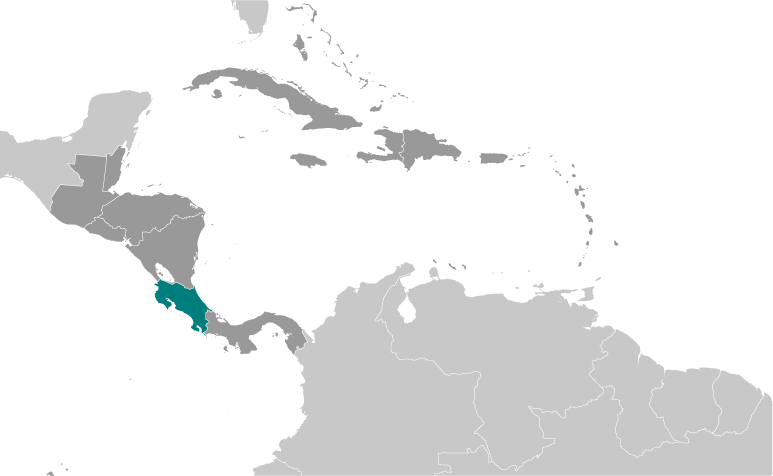
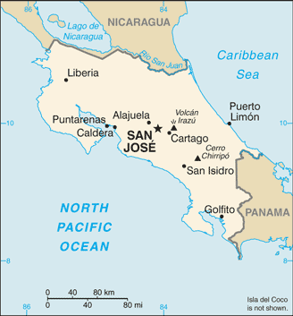
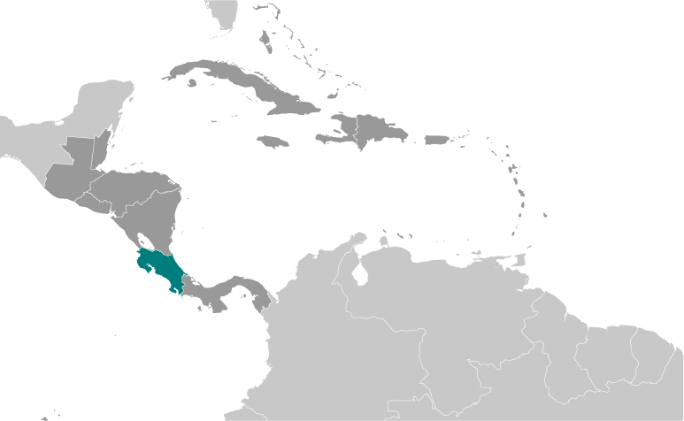
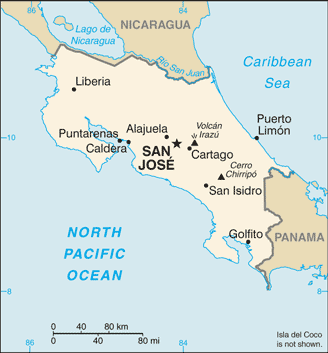

-
Introduction :: Costa Rica
-
Background:Although explored by the Spanish early in the 16th century, initial attempts at colonizing Costa Rica proved unsuccessful due to a combination of factors, including disease from mosquito-infested swamps, brutal heat, resistance by natives, and pirate raids. It was not until 1563 that a permanent settlement of Cartago was established in the cooler, fertile central highlands. The area remained a colony for some two and a half centuries. In 1821, Costa Rica became one of several Central American provinces that jointly declared their independence from Spain. Two years later it joined the United Provinces of Central America, but this federation disintegrated in 1838, at which time Costa Rica proclaimed its sovereignty and independence. Since the late 19th century, only two brief periods of violence have marred the country's democratic development. On 1 December 1948, Costa Rica dissolved its armed forces. Although it still maintains a large agricultural sector, Costa Rica has expanded its economy to include strong technology and tourism industries. The standard of living is relatively high. Land ownership is widespread.COSTA RICA SUMMARY: PDF
-
Geography :: Costa Rica
-
Location:Central America, bordering both the Caribbean Sea and the North Pacific Ocean, between Nicaragua and PanamaGeographic coordinates:10 00 N, 84 00 WMap references:Central America and the CaribbeanArea:total: 51,100 sq kmland: 51,060 sq kmwater: 40 sq km
note: includes Isla del Coco
country comparison to the world: 130Area - comparative:slightly smaller than West VirginiaLand boundaries:total: 661 kmborder countries (2): Nicaragua 313 km, Panama 348 kmCoastline:1,290 kmMaritime claims:territorial sea: 12 nmexclusive economic zone: 200 nmcontinental shelf: 200 nmClimate:tropical and subtropical; dry season (December to April); rainy season (May to November); cooler in highlandsTerrain:coastal plains separated by rugged mountains including over 100 volcanic cones, of which several are major active volcanoesElevation:mean elevation: 746 melevation extremes: 0 m lowest point: Pacific Ocean3819 highest point: Cerro ChirripoNatural resources:hydropowerLand use:agricultural land: 37.1% (2011 est.)arable land: 4.9% (2011 est.) / permanent crops: 6.7% (2011 est.) / permanent pasture: 25.5% (2011 est.)forest: 51.5% (2011 est.)other: 11.4% (2011 est.)Irrigated land:1,015 sq km (2012)Population distribution:roughly half of the nation's population resides in urban areas; the capital of San Jose is the largest city and home to approximately one-fifth of the populationNatural hazards:occasional earthquakes, hurricanes along Atlantic coast; frequent flooding of lowlands at onset of rainy season and landslides; active volcanoes
volcanism: Arenal (1,670 m), which erupted in 2010, is the most active volcano in Costa Rica; a 1968 eruption destroyed the town of Tabacon; Irazu (3,432 m), situated just east of San Jose, has the potential to spew ash over the capital city as it did between 1963 and 1965; other historically active volcanoes include Miravalles, Poas, Rincon de la Vieja, and Turrialba
Environment - current issues:deforestation and land use change, largely a result of the clearing of land for cattle ranching and agriculture; soil erosion; coastal marine pollution; fisheries protection; solid waste management; air pollutionEnvironment - international agreements:party to: Biodiversity, Climate Change, Climate Change-Kyoto Protocol, Desertification, Endangered Species, Environmental Modification, Hazardous Wastes, Law of the Sea, Marine Dumping, Ozone Layer Protection, Wetlands, Whalingsigned, but not ratified: Marine Life ConservationGeography - note:four volcanoes, two of them active, rise near the capital of San Jose in the center of the country; one of the volcanoes, Irazu, erupted destructively in 1963-65 -
People and Society :: Costa Rica
-
Population:4,987,142 (July 2018 est.)country comparison to the world: 123Nationality:noun: Costa Rican(s)adjective: Costa RicanEthnic groups:white or mestizo 83.6%, mulatto 6.7%, indigenous 2.4%, black of African descent 1.1%, other 1.1%, none 2.9%, unspecified 2.2% (2011 est.)Languages:Spanish (official), EnglishReligions:Roman Catholic 71.8%, Evangelical and Pentecostal 12.3%, other Protestant 2.6%, Jehovah's Witness 0.5%, other 2.4%, none 10.4% (2016 est.)Demographic profile:
Costa Rica's political stability, high standard of living, and well-developed social benefits system set it apart from its Central American neighbors. Through the government's sustained social spending - almost 20% of GDP annually - Costa Rica has made tremendous progress toward achieving its goal of providing universal access to education, healthcare, clean water, sanitation, and electricity. Since the 1970s, expansion of these services has led to a rapid decline in infant mortality, an increase in life expectancy at birth, and a sharp decrease in the birth rate. The average number of children born per women has fallen from about 7 in the 1960s to 3.5 in the early 1980s to below replacement level today. Costa Rica's poverty rate is lower than in most Latin American countries, but it has stalled at around 20% for almost two decades.
Costa Rica is a popular regional immigration destination because of its job opportunities and social programs. Almost 9% of the population is foreign-born, with Nicaraguans comprising nearly three-quarters of the foreign population. Many Nicaraguans who perform unskilled seasonal labor enter Costa Rica illegally or overstay their visas, which continues to be a source of tension. Less than 3% of Costa Rica's population lives abroad. The overwhelming majority of expatriates have settled in the United States after completing a university degree or in order to work in a highly skilled field.
Age structure:0-14 years: 22.43% (male 572,172 /female 546,464)15-24 years: 15.94% (male 405,515 /female 389,433)25-54 years: 44.04% (male 1,105,944 /female 1,090,434)55-64 years: 9.48% (male 229,928 /female 242,696)65 years and over: 8.11% (male 186,531 /female 218,025) (2018 est.)population pyramid: The World Factbook Field Image ModalCentral America :: Costa Rica Print
The World Factbook Field Image ModalCentral America :: Costa Rica Print Image DescriptionThis is the population pyramid for Costa Rica. A population pyramid illustrates the age and sex structure of a country's population and may provide insights about political and social stability, as well as economic development. The population is distributed along the horizontal axis, with males shown on the left and females on the right. The male and female populations are broken down into 5-year age groups represented as horizontal bars along the vertical axis, with the youngest age groups at the bottom and the oldest at the top. The shape of the population pyramid gradually evolves over time based on fertility, mortality, and international migration trends.
Image DescriptionThis is the population pyramid for Costa Rica. A population pyramid illustrates the age and sex structure of a country's population and may provide insights about political and social stability, as well as economic development. The population is distributed along the horizontal axis, with males shown on the left and females on the right. The male and female populations are broken down into 5-year age groups represented as horizontal bars along the vertical axis, with the youngest age groups at the bottom and the oldest at the top. The shape of the population pyramid gradually evolves over time based on fertility, mortality, and international migration trends.
For additional information, please see the entry for Population pyramid on the Definitions and Notes page under the References tab.Dependency ratios:total dependency ratio: 45.4 (2015 est.)youth dependency ratio: 32.4 (2015 est.)elderly dependency ratio: 12.9 (2015 est.)potential support ratio: 7.7 (2015 est.)Median age:total: 31.7 yearsmale: 31.2 yearsfemale: 32.2 years (2018 est.)country comparison to the world: 109Population growth rate:1.13% (2018 est.)country comparison to the world: 95Birth rate:15.3 births/1,000 population (2018 est.)country comparison to the world: 121Death rate:4.8 deaths/1,000 population (2018 est.)country comparison to the world: 200Net migration rate:0.8 migrant(s)/1,000 population (2017 est.)country comparison to the world: 59Population distribution:roughly half of the nation's population resides in urban areas; the capital of San Jose is the largest city and home to approximately one-fifth of the populationUrbanization:urban population: 79.3% of total population (2018)rate of urbanization: 1.5% annual rate of change (2015-20 est.)Major urban areas - population:1.358 million SAN JOSE (capital) (2018)Sex ratio:at birth: 1.05 male(s)/female (2017 est.)0-14 years: 1.05 male(s)/female (2017 est.)15-24 years: 1.04 male(s)/female (2017 est.)25-54 years: 1.01 male(s)/female (2017 est.)55-64 years: 0.95 male(s)/female (2017 est.)65 years and over: 0.86 male(s)/female (2017 est.)total population: 1.01 male(s)/female (2017 est.)Maternal mortality rate:25 deaths/100,000 live births (2015 est.)country comparison to the world: 122Infant mortality rate:total: 7.8 deaths/1,000 live births (2018 est.)male: 8.6 deaths/1,000 live births (2018 est.)female: 7.1 deaths/1,000 live births (2018 est.)country comparison to the world: 153Life expectancy at birth:total population: 78.9 years (2018 est.)male: 76.2 years (2018 est.)female: 81.7 years (2018 est.)country comparison to the world: 55Total fertility rate:1.89 children born/woman (2018 est.)country comparison to the world: 135Contraceptive prevalence rate:76.2% (2011)Health expenditures:9.3% of GDP (2014)country comparison to the world: 33Physicians density:1.15 physicians/1,000 population (2013)Hospital bed density:1.1 beds/1,000 population (2014)Drinking water source:improved: urban: 99.6% of populationrural: 91.9% of populationtotal: 97.8% of populationunimproved: urban: 0.4% of populationrural: 8.1% of populationtotal: 2.2% of population (2015 est.)Sanitation facility access:improved: urban: 95.2% of population (2015 est.)rural: 92.3% of population (2015 est.)total: 94.5% of population (2015 est.)unimproved: urban: 4.8% of population (2015 est.)rural: 7.7% of population (2015 est.)total: 5.5% of population (2015 est.)HIV/AIDS - adult prevalence rate:0.4% (2017 est.)country comparison to the world: 70HIV/AIDS - people living with HIV/AIDS:13,000 (2017 est.)country comparison to the world: 93HIV/AIDS - deaths:<200 (2017 est.)Major infectious diseases:degree of risk: intermediate (2016)food or waterborne diseases: bacterial diarrhea (2016)vectorborne diseases: dengue fever (2016)note: active local transmission of Zika virus by Aedes species mosquitoes has been identified in this country (as of August 2016); it poses an important risk (a large number of cases possible) among US citizens if bitten by an infective mosquito; other less common ways to get Zika are through sex, via blood transfusion, or during pregnancy, in which the pregnant woman passes Zika virus to her fetus
Obesity - adult prevalence rate:25.7% (2016)country comparison to the world: 48Children under the age of 5 years underweight:1.1% (2008)country comparison to the world: 121Education expenditures:7.1% of GDP (2016)country comparison to the world: 19Literacy:definition: age 15 and over can read and write (2015 est.)total population: 97.8% (2015 est.)male: 97.7% (2015 est.)female: 97.8% (2015 est.)School life expectancy (primary to tertiary education):total: 15 years (2015)male: 15 years (2015)female: 16 years (2015)Unemployment, youth ages 15-24:total: 20.6% (2017 est.)male: 17.6% (2017 est.)female: 25.9% (2017 est.)country comparison to the world: 61 -
Government :: Costa Rica
-
Country name:conventional long form: Republic of Costa Ricaconventional short form: Costa Ricalocal long form: Republica de Costa Ricalocal short form: Costa Ricaetymology: the name means "rich coast" in Spanish and was first applied in the early colonial period of the 16th centuryGovernment type:presidential republicCapital:name: San Josegeographic coordinates: 9 56 N, 84 05 Wtime difference: UTC-6 (1 hour behind Washington, DC, during Standard Time)Administrative divisions:7 provinces (provincias, singular - provincia); Alajuela, Cartago, Guanacaste, Heredia, Limon, Puntarenas, San JoseIndependence:15 September 1821 (from Spain)National holiday:Independence Day, 15 September (1821)Constitution:history: many previous; latest effective 8 November 1949 (2018)amendments: proposals require the signatures of at least 10 Legislative Assembly members or by petition of at least 5% of qualified voters; consideration of proposals requires two-thirds majority approval in each of 3 readings by the Assembly, followed by preparation of the proposal as a legislative bill and its approval by simple majority of the Assembly; passage requires at least two-thirds majority vote of the Assembly membership; a referendum is required only if approved by at least two-thirds of the Assembly; amended many times, last in 2015 (2018)Legal system:civil law system based on Spanish civil code; judicial review of legislative acts in the Supreme CourtInternational law organization participation:accepts compulsory ICJ jurisdiction; accepts ICCt jurisdictionCitizenship:citizenship by birth: yescitizenship by descent only: yesdual citizenship recognized: yesresidency requirement for naturalization: 7 yearsSuffrage:18 years of age; universal and compulsoryJudicial branch:highest courts: Supreme Court of Justice (consists of 22 judges organized into 3 cassation chambers each with 5 judges and the Constitutional Chamber with 7 judges)judge selection and term of office: Supreme Court of Justice judges elected by the National Assembly for 8-year terms with renewal decided by the National Assemblysubordinate courts: appellate courts; trial courts; first instance and justice of the peace courts; Superior Electoral TribunalExecutive branch:chief of state: President Carlos ALVARADO Quesada (since 8 May 2018); First Vice President Epsy CAMPBELL Barr (since 8 May 2018); Second Vice President Marvin RODRIGUEZ Cordero (since 8 May 2018); note - the president is both chief of state and head of governmenthead of government: President Carlos ALVARADO Quesada (since 8 May 2018); First Vice President Epsy CAMPBELL Barr (since 8 May 2018); Second Vice President Marvin RODRIGUEZ Cordero (since 8 May 2018)cabinet: Cabinet selected by the presidentelections/appointments: president and vice presidents directly elected on the same ballot by modified majority popular vote (40% threshold) for a 4-year term (eligible for non-consecutive terms); election last held on 4 February 2018 with a runoff on 1 April 2018 (next to be held in February 2022)election results: Carlos ALVARADO Quesada elected president in second round; percent of vote in first round - Fabricio ALVARADO Munoz (PRN) 25%; Carlos ALVARADO Quesada (PAC) 21.6%; Antonio ALVAREZ (PLN) 18.6%; Rodolfo PIZA (PUSC) 16%; Juan Diego CASTRO (PIN) 9.5%; Rodolfo HERNANDEZ (PRS) 4.9%, other 4.4%; percent of vote in second round - Carlos ALVARADO Quesada (PAC) 60.7%; Fabricio ALVARADO Munoz (PRN) 39.3%Legislative branch:description: unicameral Legislative Assembly or Asamblea Legislativa (57 seats; members directly elected in multi-seat constituencies - corresponding to the country's 7 provinces - by closed list proportional representation vote; members serve 4-year terms)elections: last held on 4 February 2018 (next to be held in February 2022)election results: percent of vote by party - PLN 19.5%, PRN 18.2%, PAC 16.3%, PUSC 14.6%, PLN 7.7%, PRS 4.2%, PFA 4%, ADC 2.5%, ML 2.3%, PASE 2.3%, PNG 2.2%, other 6.2%; seats by party - PLN 17, PRN 14, PAC 10, PUSC 9, PLN 4, PRS 2, PFA 1Political parties and leaders:Accessibility Without Exclusion or PASE [Oscar Andres LOPEZ Arias]
Broad Front (Frente Amplio) or PFA [Ana Patricia MORA Castellanos]
Christian Democratic Alliance or ADC [Mario REDONDO Poveda]
Citizen Action Party or PAC [Marcia GONZALEZ Aguiluz]
Costa Rican Renovation Party or PRC [Gonzalo Alberto RAMIREZ Zamora]
Libertarian Movement Party or ML [Victor Danilo CUBERO Corrales]
National Integration Party or PIN [Walter MUNOZ Cespedes]
National Liberation Party or PLN [Jorge Julio PATTONI Saenz]
National Restoration Party or PRN [Carlos Luis AVENDANO Calvo]
New Generation or PNG [Sergio MENA]
Patriotic Alliance [Jorge ARAYA Westover]
Social Christian Republican Party or PRS [Dragos DOLANESCU Valenciano]
Social Christian Unity Party or PUSC [Pedro MUNOZ Fonseca]International organization participation:BCIE, CACM, CD, CELAC, FAO, G-77, IADB, IAEA, IBRD, ICAO, ICC (national committees), ICCt, ICRM, IDA, IFAD, IFC, IFRCS, ILO, IMF, IMO, IMSO, Interpol, IOC, IOM, IPU, ISO, ITSO, ITU, ITUC (NGOs), LAES, LAIA (observer), MIGA, NAM (observer), OAS, OIF (observer), OPANAL, OPCW, Pacific Alliance (observer), PCA, SICA, UN, UNCTAD, UNESCO, UNHCR, UNIDO, Union Latina, UNWTO, UPU, WCO, WFTU (NGOs), WHO, WIPO, WMO, WTODiplomatic representation in the US:chief of mission: Ambassador Fernando LLORCA Castro (since 17 September 2018)chancery: 2114 S Street NW, Washington, DC 20008telephone: [1] (202) 480-2200FAX: [1] (202) 265-4795consulate(s) general: Atlanta, Chicago, Houston, Los Angeles, Miami, New York, Washington DCconsulate(s): Saint Paul (MN), San Juan (Puerto Rico), Tucson (AZ)Diplomatic representation from the US:chief of mission: Ambassador Sharon DAY (since 5 October 2017)embassy: Calle 98 Via 104, Pavas, San Josemailing address: APO AA 34020telephone: [506] 2519-2000FAX: [506] 2519-2305Flag description:five horizontal bands of blue (top), white, red (double width), white, and blue, with the coat of arms in a white elliptical disk placed toward the hoist side of the red band; Costa Rica retained the earlier blue-white-blue flag of Central America until 1848 when, in response to revolutionary activity in Europe, it was decided to incorporate the French colors into the national flag and a central red stripe was added; today the blue color is said to stand for the sky, opportunity, and perseverance, white denotes peace, happiness, and wisdom, while red represents the blood shed for freedom, as well as the generosity and vibrancy of the peoplenote: somewhat resembles the flag of North Korea; similar to the flag of Thailand but with the blue and red colors reversed
National symbol(s):yiguirro (clay-colored robin); national colors: blue, white, redNational anthem:name: "Himno Nacional de Costa Rica" (National Anthem of Costa Rica)lyrics/music: Jose Maria ZELEDON Brenes/Manuel Maria GUTIERREZnote: adopted 1949; the anthem's music was originally written for an 1853 welcome ceremony for diplomatic missions from the US and UK; the lyrics were added in 1903
-
Economy :: Costa Rica
-
Economy - overview:
Since 2010, Costa Rica has enjoyed strong and stable economic growth - 3.8% in 2017. Exports of bananas, coffee, sugar, and beef are the backbone of its commodity exports. Various industrial and processed agricultural products have broadened exports in recent years, as have high value-added goods, including medical devices. Costa Rica's impressive biodiversity also makes it a key destination for ecotourism.
Foreign investors remain attracted by the country's political stability and relatively high education levels, as well as the incentives offered in the free-trade zones; Costa Rica has attracted one of the highest levels of foreign direct investment per capita in Latin America. The US-Central American-Dominican Republic Free Trade Agreement (CAFTA-DR), which became effective for Costa Rica in 2009, helped increase foreign direct investment in key sectors of the economy, including insurance and telecommunication. However, poor infrastructure, high energy costs, a complex bureaucracy, weak investor protection, and uncertainty of contract enforcement impede greater investment.
Costa Rica’s economy also faces challenges due to a rising fiscal deficit, rising public debt, and relatively low levels of domestic revenue. Poverty has remained around 20-25% for nearly 20 years, and the government’s strong social safety net has eroded due to increased constraints on its expenditures. Costa Rica’s credit rating was downgraded from stable to negative in 2015 and again in 2017, upping pressure on lending rates - which could hurt small business, on the budget deficit - which could hurt infrastructure development, and on the rate of return on investment - which could soften foreign direct investment (FDI). Unlike the rest of Central America, Costa Rica is not highly dependent on remittances - which represented just 1 % of GDP in 2016, but instead relies on FDI - which accounted for 5.1% of GDP.
GDP (purchasing power parity):$83.94 billion (2017 est.)$81.27 billion (2016 est.)$77.96 billion (2015 est.)note: data are in 2017 dollars
country comparison to the world: 93GDP (official exchange rate):$58.27 billion (2017 est.) (2017 est.)GDP - real growth rate:3.3% (2017 est.)4.2% (2016 est.)3.6% (2015 est.)country comparison to the world: 104GDP - per capita (PPP):$16,900 (2017 est.)$16,600 (2016 est.)$16,100 (2015 est.)note: data are in 2017 dollars
country comparison to the world: 104Gross national saving:15.1% of GDP (2017 est.)16.1% of GDP (2016 est.)15% of GDP (2015 est.)country comparison to the world: 135GDP - composition, by end use:household consumption: 64.2% (2017 est.)government consumption: 17.3% (2017 est.)investment in fixed capital: 17.1% (2017 est.)investment in inventories: 1% (2017 est.)exports of goods and services: 33.3% (2017 est.)imports of goods and services: -32.9% (2017 est.)GDP - composition, by sector of origin:agriculture: 5.5% (2017 est.)industry: 20.6% (2017 est.)services: 73.9% (2017 est.)Agriculture - products:bananas, pineapples, coffee, melons, ornamental plants, sugar, corn, rice, beans, potatoes; beef, poultry, dairy; timberIndustries:medical equipment, food processing, textiles and clothing, construction materials, fertilizer, plastic productsIndustrial production growth rate:1.3% (2017 est.)country comparison to the world: 147Labor force:2.229 million (2017 est.)note: official estimate; excludes Nicaraguans living in Costa Rica
country comparison to the world: 121Labor force - by occupation:agriculture: 14%industry: 22%services: 64% (2006 est.)Unemployment rate:8.1% (2017 est.)9.5% (2016 est.)country comparison to the world: 117Population below poverty line:21.7% (2014 est.)Distribution of family income - Gini index:48.5 (2014)49.2 (2013)country comparison to the world: 22Budget:revenues: 8.357 billion (2017 est.)expenditures: 11.92 billion (2017 est.)Taxes and other revenues:14.3% (of GDP) (2017 est.)country comparison to the world: 200Budget surplus (+) or deficit (-):-6.1% (of GDP) (2017 est.)country comparison to the world: 185Public debt:48.9% of GDP (2017 est.)44.9% of GDP (2016 est.)country comparison to the world: 105Fiscal year:calendar yearInflation rate (consumer prices):1.6% (2017 est.)0% (2016 est.)country comparison to the world: 89Central bank discount rate:3.5% (31 December 2016 est.)21.5% (31 December 2010)country comparison to the world: 102Commercial bank prime lending rate:11.37% (31 December 2017 est.)11.64% (31 December 2016 est.)country comparison to the world: 71Stock of narrow money:$5.356 billion (31 December 2017 est.)$5.63 billion (31 December 2016 est.)country comparison to the world: 100Stock of broad money:$5.356 billion (31 December 2017 est.)$5.63 billion (31 December 2016 est.)country comparison to the world: 103Stock of domestic credit:$41.04 billion (31 December 2017 est.)$38.21 billion (31 December 2016 est.)country comparison to the world: 69Current account balance:-$1.692 billion (2017 est.)-$1.326 billion (2016 est.)country comparison to the world: 160Exports:$10.81 billion (2017 est.)$10.15 billion (2016 est.)country comparison to the world: 92Exports - partners:US 40.9%, Belgium 6.3%, Panama 5.6%, Netherlands 5.6%, Nicaragua 5.1%, Guatemala 5% (2017)Exports - commodities:bananas, pineapples, coffee, melons, ornamental plants, sugar; beef; seafood; electronic components, medical equipmentImports:$15.15 billion (2017 est.)$14.53 billion (2016 est.)country comparison to the world: 90Imports - commodities:raw materials, consumer goods, capital equipment, petroleum, construction materialsImports - partners:US 38.1%, China 13.1%, Mexico 7.3% (2017)Reserves of foreign exchange and gold:$7.15 billion (31 December 2017 est.)$7.574 billion (31 December 2016 est.)country comparison to the world: 86Debt - external:$26.83 billion (31 December 2017 est.)$24.3 billion (31 December 2016 est.)country comparison to the world: 86Stock of direct foreign investment - at home:$33.92 billion (31 December 2017 est.)$31.84 billion (31 December 2016 est.)country comparison to the world: 68Stock of direct foreign investment - abroad:$4.007 billion (31 December 2017 est.)$3.781 billion (31 December 2016 est.)country comparison to the world: 78Exchange rates:Costa Rican colones (CRC) per US dollar -573.5 (2017 est.)544.74 (2016 est.)544.74 (2015 est.)534.57 (2014 est.)538.32 (2013 est.) -
Energy :: Costa Rica
-
Electricity access:population without electricity: 24,362 (2013)electrification - total population: 99.5% (2013)electrification - urban areas: 99.9% (2013)electrification - rural areas: 98.3% (2013)Electricity - production:10.79 billion kWh (2016 est.)country comparison to the world: 100Electricity - consumption:9.812 billion kWh (2016 est.)country comparison to the world: 98Electricity - exports:643 million kWh (2015 est.)country comparison to the world: 64Electricity - imports:807 million kWh (2016 est.)country comparison to the world: 72Electricity - installed generating capacity:3.584 million kW (2016 est.)country comparison to the world: 94Electricity - from fossil fuels:18% of total installed capacity (2016 est.)country comparison to the world: 196Electricity - from nuclear fuels:0% of total installed capacity (2017 est.)country comparison to the world: 72Electricity - from hydroelectric plants:64% of total installed capacity (2017 est.)country comparison to the world: 25Electricity - from other renewable sources:18% of total installed capacity (2017 est.)country comparison to the world: 48Crude oil - production:0 bbl/day (2017 est.)country comparison to the world: 123Crude oil - exports:0 bbl/day (2015 est.)country comparison to the world: 109Crude oil - imports:0 bbl/day (2015 est.)country comparison to the world: 115Crude oil - proved reserves:0 bbl (1 January 2018 est.)country comparison to the world: 120Refined petroleum products - production:0 bbl/day (2015 est.)country comparison to the world: 134Refined petroleum products - consumption:53,000 bbl/day (2016 est.)country comparison to the world: 100Refined petroleum products - exports:0 bbl/day (2015 est.)country comparison to the world: 147Refined petroleum products - imports:51,320 bbl/day (2015 est.)country comparison to the world: 80Natural gas - production:0 cu m (2017 est.)country comparison to the world: 120Natural gas - consumption:0 cu m (2017 est.)country comparison to the world: 136Natural gas - exports:0 cu m (2017 est.)country comparison to the world: 88Natural gas - imports:0 cu m (2017 est.)country comparison to the world: 111Natural gas - proved reserves:0 cu m (1 January 2014 est.)country comparison to the world: 125Carbon dioxide emissions from consumption of energy:7.653 million Mt (2017 est.)country comparison to the world: 120
-
Communications :: Costa Rica
-
Telephones - fixed lines:total subscriptions: 843,148 (2017 est.)subscriptions per 100 inhabitants: 17 (2017 est.)country comparison to the world: 79Telephones - mobile cellular:total subscriptions: 8,840,342 (2017 est.)subscriptions per 100 inhabitants: 179 (2017 est.)country comparison to the world: 88Telephone system:general assessment: good domestic telephone service in terms of breadth of coverage; in recent years growth has been achieve from liberalistion of the telecom sector and has seen substantial expansion in all sectors; Costa Rica's broadband market is the most advanced in Central America, with the highest broadband penetration for this sub-region; broadband penetration does lag behind many South American countries; with the implementation of number portability there is greater opportunity for increased competition in the future (2017)domestic: point-to-point and point-to-multi-point microwave, fiber-optic, and coaxial cable link rural areas; Internet service is available; 17 per 100 fixed-line, 179 per 100 mobile-cellular (2017)international: country code - 506; landing points for the Americas Region Caribbean Ring System (ARCOS-1), MAYA-1, and the Pan American Crossing submarine cables that provide links to South and Central America, parts of the Caribbean, and the US; connected to Central American Microwave System; satellite earth stations - 2 Intelsat (Atlantic Ocean) (2015)Broadcast media:multiple privately owned TV stations and 1 publicly owned TV station; cable network services are widely available; more than 100 privately owned radio stations and a public radio network (2017)Internet country code:.crInternet users:total: 3,217,277 (July 2016 est.)percent of population: 66% (July 2016 est.)country comparison to the world: 95Broadband - fixed subscriptions:total: 744,059 (2017 est.)subscriptions per 100 inhabitants: 15 (2017 est.)country comparison to the world: 74
-
Transportation :: Costa Rica
-
National air transport system:number of registered air carriers: 1 (2015)inventory of registered aircraft operated by air carriers: 39 (2015)annual passenger traffic on registered air carriers: 1,617,075 (2015)annual freight traffic on registered air carriers: 9,284,160 mt-km (2015)Civil aircraft registration country code prefix:TI (2016)Airports:161 (2013)country comparison to the world: 35Airports - with paved runways:total: 47 (2017)2,438 to 3,047 m: 2 (2017)1,524 to 2,437 m: 2 (2017)914 to 1,523 m: 27 (2017)under 914 m: 16 (2017)Airports - with unpaved runways:total: 114 (2013)914 to 1,523 m: 18 (2013)under 914 m: 96 (2013)Pipelines:662 km refined products (2013)Railways:total: 278 km (2014)narrow gauge: 278 km 1.067-m gauge (2014)
note: the entire rail network fell into disrepair and out of use at the end of the 20th century; since 2005, certain sections of rail have been rehabilitated
country comparison to the world: 123Roadways:total: 39,018 km (2010)paved: 10,133 km (2010)unpaved: 28,885 km (2010)country comparison to the world: 90Waterways:730 km (seasonally navigable by small craft) (2011)country comparison to the world: 74Merchant marine:total: 10 (2017)by type: general cargo 2, other 8 (2017)country comparison to the world: 147Ports and terminals:major seaport(s): Atlantic Ocean (Caribbean) - Puerto LimonPacific Ocean - Caldera -
Military and Security :: Costa Rica
-
Military branches:no regular military forces; Ministry of Public Security, Government, and Police (2011)
-
Transnational Issues :: Costa Rica
-
Disputes - international:Costa Rica and Nicaragua regularly file border dispute cases over the delimitations of the San Juan River and the northern tip of Calero Island to the International Court of Justice (ICJ); in 2009, the ICJ ruled that Costa Rican vessels carrying out police activities could not use the river, but official Costa Rican vessels providing essential services to riverside inhabitants and Costa Rican tourists could travel freely on the river; in 2011, the ICJ provisionally ruled that both countries must remove personnel from the disputed area; in 2013, the ICJ rejected Nicaragua's 2012 suit to halt Costa Rica's construction of a highway paralleling the river on the grounds of irreparable environmental damage; in 2013, the ICJ, regarding the disputed territory, ordered that Nicaragua should refrain from dredging or canal construction and refill and repair damage caused by trenches connecting the river to the Caribbean and upheld its 2010 ruling that Nicaragua must remove all personnel; in early 2014, Costa Rica brought Nicaragua to the ICJ over offshore oil concessions in the disputed regionRefugees and internally displaced persons:refugees (country of origin): 9,655 (Venezuela) (economic and political crisis; includes Venezuelans who have claimed asylum or have received alternative legal stay) (2018)stateless persons: 71 (2017)Trafficking in persons:current situation: Costa Rica is a source, transit, and destination country for men, women, and children subjected to sex trafficking and forced labor; Costa Rican women and children, as well as those from Nicaragua, the Dominican Republic, and other Latin American countries, are sex trafficked in Costa Rica; child sex tourism is a particular problem with offenders coming from the US and Europe; men and children from Central America, including indigenous Panamanians, and Asia are exploited in agriculture, construction, fishing, and commerce; Nicaraguans transit Costa Rica to reach Panama, where some are subjected to forced labor or sex traffickingtier rating: Tier 2 Watch List – Costa Rica does not fully comply with the minimum standards for the elimination of trafficking; however, it is making significant efforts to do so; anti-trafficking law enforcement efforts declined in 2014, with fewer prosecutions and no convictions and no actions taken against complicit government personnel; some officials conflated trafficking with smuggling, and authorities reported the diversion of funds to combat smuggling hindered anti-trafficking efforts; the government identified more victims than the previous year but did not make progress in ensuring that victims received adequate protective services; specialized services were limited and mostly provided by NGOs without government support, even from a dedicated fund for anti-trafficking efforts; victims services were virtually non-existent outside of the capital (2015)Illicit drugs:transshipment country for cocaine and heroin from South America; illicit production of cannabis in remote areas; domestic cocaine consumption, particularly crack cocaine, is rising; significant consumption of amphetamines; seizures of smuggled cash in Costa Rica and at the main border crossing to enter Costa Rica from Nicaragua have risen in recent years
Central America ::
Costa Rica